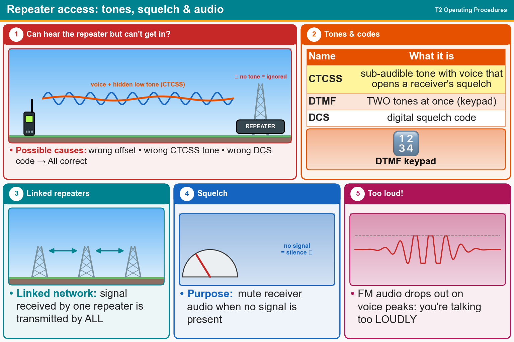

💡 CTCSS = one hidden low tone. DTMF = two tones at once. Squelch hides the hiss.
📚 Key words
- Squelch
- Mutes the speaker hiss when no signal is there.
- CTCSS (PL tone)
- A low tone you can't hear, sent with your voice to open a repeater's squelch.
- DCS
- A digital code doing the same job as CTCSS. Wrong offset, wrong tone or wrong code = can't get in.
- DTMF
- Two tones at once, like phone keypad beeps. Used to send commands.
- Linked repeaters
- A network where a signal heard by one repeater is sent out by all of them.
- Audio drop-out
- Your voice cuts out on loud parts. You're talking too loudly.
Press Check on any question to see if you're right (it won't show the answer), or Grade at the bottom to grade the whole page.
T2B04
Which of the following could be the reason you are unable to access a repeater whose output you can hear?
✘A.You are using the wrong DCS code
✘B.Improper transceiver offset
✘C.You are using the wrong CTCSS tone
✔D.All these choices are correct
T2B02
What term describes the use of a sub-audible tone transmitted along with normal voice audio to open the squelch of a receiver?
✘A.Carrier squelch
✔B.CTCSS
✘C.Tone burst
✘D.DTMF
T2B06
What type of signaling to a repeater uses two simultaneous audio tones?
✘A.D-STAR
✔B.DTMF
✘C.CTCSS
✘D.GMRS
T2B03
Which of the following describes a linked repeater network?
✘A.A system of repeaters linked by APRS
✔B.A network of repeaters in which signals received by one repeater are transmitted by all the repeaters in the network
✘C.Multiple repeaters with the same control operator
✘D.A single repeater with more than one receiver
T2B13
What is the purpose of a squelch function?
✘A.Reduce interference from impulse noise
✘B.Reduce a CW transmitter's key clicks
✘C.Eliminate parasitic oscillations in an RF amplifier
✔D.Mute the receiver audio when a signal is not present
T2B05
Which of the following would cause your FM transmission audio to drop out on voice peaks?
✔A.You are talking too loudly
✘B.Your FM deviation is too low
✘C.Your transmit power is too high
✘D.Your repeater offset is inverted